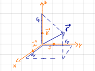
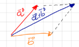
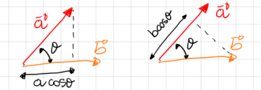

Vectors (Brief Recap)#
Prepared by: Hardit Saini, Emmanuel Airiofolo and Angadh Nanjangud
In this lecture we cover the following topics:
A vector is a quantity with a direction and a magnitude.
\(\vec{\rm{r}}\), \(\underline{\rm{r}}\), \(\bf{r}\) are all possible notations for vector quantities.
We describe a vector by its components:
\(\vec{\rm{r}}\) = \(\rm{r_x} \hat{\bf{i}}\) + \(\rm{r_y} \hat{\bf{j}}\) + \(\rm{r_z} \hat{\bf{k}}\) = (\(\rm{r_x}, \rm{r_y}, \rm{r_z}\))where \(\hat{\bf{i}}\), \(\hat{\bf{j}}\), and \(\hat{\bf{k}}\) are unit vectors aligned with a triad of orthogonal axes.

The magnitude is indicated by \(\|\bf{r}\|\) or simply by \(r\), and
Vector Operations#
Multiplication of a Scalar with a Vector#
When a vector \(\bf{A}\) is multiplied by a scalar \(\rm{Q}\), the result is a new vector \(\rm{Q}\bf{A}\), which has the same direction as \(\bf{A}\) but a magnitude that is \(|\rm{Q}|\) times the magnitude of \(\bf{A}\).
The sum of vectors \(\bf{A}\) and \(\bf{B}\) is a vector \(\bf{C}\) such that:
Parallelogram Rule: The sum of two vectors can also be represented geometrically using the parallelogram rule: Place the vectors \(\bf{A}\) and \(\bf{B}\) tail to tail. Draw a parallelogram where \(\bf{A}\) and \(\bf{B}\) are adjacent sides. The interception of the two projected lines represents the point where \(\bf{A}\) is summed with \(\bf{B}\), \(\bf{A} + \bf{B}\).

Dot Product Rule#
The dot product (or scalar product) of two vectors \(\bf{A}\) and \(\bf{B}\) is defined as:
Where \(\theta\) is the angle between \(\bf{A}\) and \(\bf{B}\).
If one of the vectors is a unit vector (say, \(\hat{\bf{B}}\)), the dot product gives the projection of \(\bf{A}\) onto \(\hat{\bf{B}}\):
This is because \(|\hat{\bf{B}}|\) = 1.

Time Derivative of a Vector#
The time derivative of a vector \(\bf{A}\) represents how the vector changes with respect to time.
In an Inertial Reference Frame#
The time derivative of a vector \(\bf{r}\) in an inertial reference frame is given by:
In a Rotating Reference Frame with angular velocity \(\boldsymbol{\omega}\), the time derivative of the vector \(\bf{r}\) must account for the rotation:
where:
\(\left( \frac{d{\bf{r}}}{dt} \right)_{\text{rotating}}\) is the time derivative in the rotating frame.
\(\left( \frac{d{\bf{r}}}{dt} \right)_{\text{inertial}}\) is the time derivative in the inertial frame.
\(\boldsymbol{\omega}\) is the angular velocity of the rotating frame.
\(\times\) denotes the cross product (see above for more information).
This can also be expressed as:
References#
Admin (2019). Parallelepiped- Definition, Volume and Area Formula, Example. [online] BYJUS. Available at: https://byjus.com/maths/parallelepiped/ [Accessed 2 Sep. 2024].
Cross (2024). Cross Product & Right Hand Rule | Formula, Applications & Example - Video | Study.com. [online] study.com. Available at: https://study.com/academy/lesson/video/cross-product-right-hand-rule-definition-formula-examples.html [Accessed 2 Sep. 2024].